무선설비기능사 (2006-01-22 기출문제)
1과목: 임의 구분
1. 반도체의 다수캐리어로 옳게 짝지어진 것은?
- P형의 정공, N형의 전자
- P형의 정공, N형의 정공
- P형의 전자, N형의 전자
- P형의 전자, N형의 정공
(정답률: 알수없음)

2. 0.1[V]의 교류 입력이 10[V]로 증폭되었을 때 증폭도는 몇 [dB] 인가?
- 0.1[dB]
- 4[dB]
- 20[dB]
- 40[dB]
(정답률: 알수없음)
3. 이상적인 op Amp(연산 증폭기)의 조건으로 틀린 것은?
- 전압이득 Av = ∞ 이다.
- 대역폭 Bw = ∞ 이다.
- 출력임피던스 RD = 0 이다.
- 오프셋트(offset) 전압 1 이다.
(정답률: 알수없음)
4. 어떤 교류전압의 평균값이 382[V]일 때의 실효값은 몇 [V] 인가?
- 300[V]
- 343[V]
- 424[V]
- 848[V]
(정답률: 알수없음)
5. 반송파 fc와 신호주파수 fs를 링 변조기에 인가 하였을 때 출력은?
- fc + fs
- fc ± fs
- 2(fc ± fs)
- 4(fc ± fs)
(정답률: 알수없음)
6. 100[V]의 전원에 5[A]의 전류가 흘렀다. 부하의 콘덕턴스는 몇 [℧] 인가?
- 0.⑤
- 0.5
- 5
- 20
(정답률: 알수없음)
7. 정전용량이 같은 콘덴서 3개를 직렬로 했을 때 합성전전 용량은 병렬로 연결했을 때의 몇 배인가?
- 9
- 3
- 1/32
- 1/3
(정답률: 알수없음)
8. 저항 6[Ω], 유도리액턴스 2[Ω], 용량리액턴스 10[Ω]인 직렬회로의 임피던스의 크기는?
- 10[Ω]
- 13.4[Ω]
- 4.2[Ω]
- 3.7[Ω]
(정답률: 알수없음)
9. 저주파 발진기의 출력파형을 정현파에 가깝게 하기 위해 일반적으로 사용하는 회로는?
- 대역소거 여파기(BEF)
- 저역 여파기(LPF)
- 고역 여파기(HPF)
- 수정 여파기(X-tal F)
(정답률: 알수없음)
10. 다음 ( ) 안에 알맞은 말은?
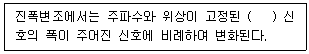
- 정류파
- 정현파
- 삼각파
- 맥류파
(정답률: 알수없음)
11. R와 L의 병렬회로 합성 임피던스는?
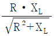
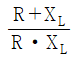
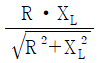
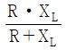
(정답률: 알수없음)
12. 수정 발진자의 발진 주파수 범위 f가 옳게 표현된 것은? (단, fs = 직렬공진주파수, fp = 병렬공진주파수임)
- fs = f = fp
- fs ＞ f ＞ fp
- fs ＜ f ＜ fp
- fs ＜ f = fp
(정답률: 알수없음)
13. 공기 중에서 –7×10-4[Wb]인 자속으로부터 7[cm] 떨어진 점의 자장의 세기는 얼마인가?
- 9.04×106[AT/m]
- 9.04×105[AT/m]
- 9.04×104[AT/m]
- 9.04×103[AT/m]
(정답률: 알수없음)
14. 자석에 의한 자기 현상의 설명 중 옳은 것은?
- 서로 다른 극 사이에는 흡인력이 작용한다.
- 철심이 있으면 자속 발생이 어렵다.
- 자력선은 N극으로 들어와서 S극으로 나간다.
- 자력은 거리에 비례한다.
(정답률: 알수없음)
15. 다음 그림에서 A, B 사이의 저항 값은 얼마인가?
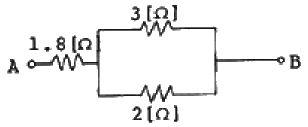
- 6.8[Ω]
- 3.3[Ω]
- 3[Ω]
- 2.8[Ω]
(정답률: 알수없음)
16. 운영체제의 제어 프로그램에 속하지 않은 것은?
- 감시 프로그램
- 작업 관리 프로그램
- 서비스 프로그램
- 데이터 관리 프로그램
(정답률: 알수없음)
17. 플라스틱 테이프의 표면에 자성 물질을 입힌 것으로 보관이 쉽고 순차적 처리에 적합한 기억장치는?
- 자기테이프 기억장치
- 자기드럼 기억장치
- 자기디스크 기억장치
- 자기박막 기억장치
(정답률: 알수없음)
18. 전가산기(Full Adder)는 어떤 회로로 구성되는가?
- 반가산기 2개와 AND 게이트로 구성된다.
- 반가산기 2개와 AND 게이트로 구성된다.
- 반가산기 2개와 AND 게이트로 구성된다.
- 반가산기 2개와 AND 게이트로 구성된다.
(정답률: 알수없음)
19. 순서도 작성에 필요한 다음 기호는 무엇을 나타내는가?
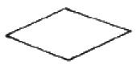
- 처리기호
- 준비기호
- 판단기호
- 종료기호
(정답률: 알수없음)
20. 원시 프로그램(SOURCE PROGRAM)이란?
- 번역용 프로세서에 의해 생성된 것
- 기계가 이해할 수 있는 기계어로 된 것
- 사용자가 작성한 컴파일러 언어로 된 것
- 로더(Loader)에 의해 실행 가능한 것
(정답률: 알수없음)
2과목: 임의 구분
21. 다음은 IC 메모리와 자기 코어 메모리를 서로 비교 해놓은 것이다. 이 중 틀린 것은?
- 일반적으로 IC 메모리가 자기 코어 메모리보다 읽는 속도가 빠르다.
- 자기 코어 메모리는 전원이 끊겨 버리면 기억한 정보를 잃어 버린다.
- 자기 코어 메모리는 읽을 때 기억하고 있는 정보를 파괴하면서 읽는다.
- IC 메모리는 읽어낼 때 기억하고 있는 정보를 파괴하지 않는다.
(정답률: 알수없음)
22. 전자 계산기 논리 회로 중 항상 반대의 결과를 나타내는 회로는?
- AND 회로
- OR 회로
- NOT 회로
- FLIP-FLOP 회로
(정답률: 알수없음)
23. 10진수 21을 2진수로 변환하면 얼마인가?
- (10011)2
- (10100)2
- (10101)2
- (10110)2
(정답률: 알수없음)
24. 연산결과가 양수(0) 또는 음수(1)인지, 자리올림(carry), 넘침(overflow)이 발생했는가를 표시하는 레지스터는?
- 누산기
- 가산기
- 데이터레지스터
- 상태레지스터
(정답률: 알수없음)
25. 높은 집적도의 IC들이 컴퓨터의 부품으로 사용됨에 따라 시스템은 많은 장점들을 얻을 수 있다. 장점에 대한 설명 중 틀린 것은?
- 회로들이 더 근접하여 위치하게 됨으로써 전기적 통로의 길이가 줄어들어 동작속도가 크게 상승하게 되었다.
- 회로들간의 상호 연결이 칩 내부에서 이루어지기 때문에 부품들의 신뢰성이 높아졌다.
- 칩의 집적도가 높아짐에 따라 컴퓨터의 가격이 하락하게 되었다.
- 컴퓨터의 크기가 대폭 줄어들어 전력 소모가 없으며, 냉각 장치가 필요 없다.
(정답률: 알수없음)
26. 다음 중 수정진동자의 전기적 등가회로는?
- R.L.C의 직렬공진회로
- L과 C의 직렬공진회로
- L과 C의 병렬공진회로
- R.L.C의 병렬공진회로
(정답률: 알수없음)
27. 급전점 임피던스가 75[Ω]인 안테나에 특성임피던스가 50[Ω]인 파이더를 연결한다면 반사계수가 얼마인가?
- 0.1
- 0.2
- 0.3
- 0.4
(정답률: 알수없음)
28. 다음 중 전리층이 발생되는 주 원인은?
- 전자파
- 우뢰
- 적외선
- 자외선
(정답률: 알수없음)
29. 수퍼 헤테로다인 수신기의 수신 주파수를 중간 주파수로 변환하는 이유 중 가장 타당한 것은?
- 명료도를 개선하기 위하여
- 주파수 혼신을 제거하기 위하여
- 내부 잡음을 줄이기 위하여
- 이득이 좋은 안정된 증폭을 위하여
(정답률: 알수없음)
30. 무선전화 송신기에서 과변조시 일어나는 현상으로 가장 타당한 것은?
- 신호파형이 찌그러진다.
- 신호파의 명료도가 좋아진다.
- 점유 주파수 대역폭이 좁아진다.
- 혼신이 적어진다.
(정답률: 알수없음)
31. 변조신호의 높은 주파수 성분들의 신호대 잡음비를 향상시키기 위해 사용되는 회로는?
- 순시편이 제어회로
- 자동이득 제어회로
- 주파수 체배회로
- 프리엠퍼시스 회로
(정답률: 알수없음)
32. 간접 FM 변조에서 적분회로는 어떤 목적에 쓰이는가?
- 위상변조파를 등가적은 FM 파로 만들기 위하여 사용된다.
- 반송 주파수를 높이기 위하여 사용된다.
- 주파수 편이를 크게하기 위하여 사용된다.
- 명료한 통신을 하기 위하여 사용된다.
(정답률: 알수없음)
33. 다음 중 옳은 관계식은? (단, LUF : 최저사용 주파수, MUF : 최고사용 주파수, FOT : 최적사용 주파수)
- LUF ＞ MUF ＞ FOT
- LUF ＞ FOT ＞ MUF
- MUF ＞ FOT ＞ LUF
- FOT ＞ LUF ＞ MUF
(정답률: 알수없음)
34. 페이딩에 대한 설명 중 틀린 것은?
- 야간보다도 주간에 많이 나타난다.
- 공간파와 지표파의 간섭에 의해서 생긴다.
- 수신음이 높아졌다 낮아졌다 한다.
- 단파통신에 많이 나타난다.
(정답률: 알수없음)
35. 어느 전원 정류기가 무부하시 단자 전압이 Eo[V], 정격부하시 전압이 E[V]이다. 이전원의 전압 변동율을 나타내는 식은?
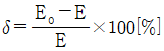
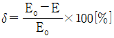
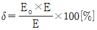
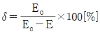
(정답률: 알수없음)
36. 희망하는 주파수를 불필요한 다른 전파들로부터 어느 정도 분리시켜 선택할 수 있는가 하는 능력을 무엇이라 하는가?
- 감도
- 선택도
- 충실도
- 잡음지수
(정답률: 알수없음)
37. 송신기의 스퓨리어스 복사의 측정법이 아닌 것은?
- 전력측정에 의한 방법
- 전구 부하에 의한 방법
- 전기장 강도 측정에 의한 방법
- 브라운관에 의한 방법
(정답률: 알수없음)
38. 단축파대(SSB) 통신방식의 수신측에 나타나는 신호성분으로 볼 수 있는 것은?
- 상측파 혹은 하측파
- 반송파성분
- 진폭성분
- 펄스성분
(정답률: 알수없음)
39. 축전지의 기전력이 5[V](무부하시), 그리고 8[Ω]의 부하를 걸었을 때 부하전압이 4[V]이면 축전지의 내부저항은 몇 [Ω] 인가?
- 2
- 3
- 4
- 5
(정답률: 알수없음)
40. 위성통신의 특징이 아닌 것은?
- 통신용량이 크다.
- 전송오류율이 작다.
- SHF주파수를 사용한다.
- 저품질의 협대역 통신에 적합하다.
(정답률: 알수없음)
3과목: 임의 구분
41. 수신기에서 입력전압이 10[μV]일 때 증폭하여 출력전압이 10[mV] 이라면 이득은 얼마가 되는가?
- 10[dB]
- 20[dB]
- 40[dB]
- 60[dB]
(정답률: 알수없음)
42. 해사위성통신에 제공되는 위성은 적도상공 35,786km의 고도를 유지해야 하는데 이에 대한 이론적인 배경으로 맞는 것은?
- 케플러 법칙
- 만유인력의 법칙
- 맥스웰의 법칙
- 프레밍의 법칙
(정답률: 알수없음)
43. λ/4수직접지 안테나의 높이가 15[m]라 하면 이 안터네가 복사하는 전파의 파장은 몇 [m] 인가?
- 25
- 50
- 60
- 100
(정답률: 알수없음)
44. 지상 300km – 1500km 에 떠있으며, 기상관측, 자원탐사 등에 이용되는 위성은?
- 저궤도 위성
- 중궤도 위성
- 고궤도 위성
- 정지궤도 위성
(정답률: 알수없음)
45. 레이더의 안테나와 송,수신회로를 연결시켜 주는 급전선으로 가장 적당한 것은?
- 평행 2선식
- 동축 케이블
- 동조 급전선
- 도파관
(정답률: 알수없음)
46. 전파법에 의하여 허가를 받아야 하는 전파응응설비는 고주파 에너지 출력이 몇 와트[W]를 초과하는 것을 말하는가?
- 50[W]
- 100[W]
- 500[W]
- 1[kW]
(정답률: 알수없음)
47. 수신설비가 충족해야 할 조건에 적합하지 않는 것은?
- 내부잡음이 적을 것
- 감도가 충분할 것
- 선택도가 클 것
- 허용편차가 충분할 것
(정답률: 알수없음)
48. 양측파대 수신기에 의해 수신이 가능하도록 반송파를 일정한 레벨로 송출하는 전파를 정의하는 것은?
- 전반송파
- 부반송파
- 저감반송파
- 억압반송파
(정답률: 알수없음)
49. 무선기기의 형식검정 대상이 아닌 것은?
- 비상위치지시용 무선표지설비
- 선박국요 무선 방위측정기
- 경보 자동 전화장치
- 라디오부이의 기기
(정답률: 알수없음)
50. 다음 중 송신장치에서 발생하는 고주파 에너지를 공간에 복사하는 설비를 무엇이라 하는가?
- 송신설비
- 송신장치
- 송신공중선계
- 무선설비
(정답률: 알수없음)
51. 535[kHz]초과 16⑤.5[kHz]이하 주파수대 방송국의 주파수 허용편차는?
- 10[Hz]
- 20[Hz]
- 50[Hz]
- 1000[Hz]
(정답률: 알수없음)
52. 무선설비형식검정 합격 취소 사유가 아닌 것은?
- 허위 기타 부정한 방법으로 형식검정에 합격한 때
- 합격기기로서 생산된 기기가 형식검정 합격기준에 적합하지 아니한 때
- 신청서 또는 첨부서류의 기재사항이 누락되었을 때
- 형식검정 합격표시를 아니한 때
(정답률: 알수없음)
53. 암호를 사용할 수 없는 무선국은?
- 고정국
- 항공국
- 실험국
- 해안국
(정답률: 알수없음)
54. 같은 통신망의 통신소로 가장 개입하여 중요내용 또는 비밀을 발설하게 유도하여 내용을 탐지하는 것은?
- 교신분석
- 내용분석
- 기만통신
- 방향탐지
(정답률: 알수없음)
55. 통신수단별 보안도의 순위가 높은 순으로 옳은 것은?
- 전령 – 우편 – 시호 – 전기
- 우편 – 전령 – 시호 – 전기
- 시호 – 우편 – 전령 – 전기
- 전령 – 시호 – 전기 – 우편
(정답률: 알수없음)
56. 다음 중 일반적으로 통신내용이 중요할 경우 안전하게 보내는 가장 적당한 방법은?
- 약호를 사용한다.
- 모르스부호를 사용한다.
- 약어를 사용한다.
- 평문을 사용한다.
(정답률: 알수없음)
57. 비상국의 전원은 수동발전기, 원동발전기, 무정전 전원실비 또는 축전기로서 몇 시간이상 상시 운용할 수 있어야 하는가?
- 12시간
- 24시간
- 48시간
- 72시간
(정답률: 알수없음)
58. 정보통신기기인증규칙에서 인증번호부여 방법 중 인증의 종류가 틀린 것은?
- 형식승인 : T
- 형식검정 : A
- 형식등록 : J
- 전자파적합등록 : E
(정답률: 알수없음)
59. 다음 중 공중선 전력의 표시가 아닌 것은?
- 첨두포락선전력
- 평균전력
- 반송파전력
- 복사전력
(정답률: 알수없음)
60. 다음 중 통신보안의 목적과 가장 관계가 깊은 것은?
- 통신내용의 수집
- 통신장비의 보호
- 통신운용 질서 유지
- 통신내용의 누설방지
(정답률: 알수없음)